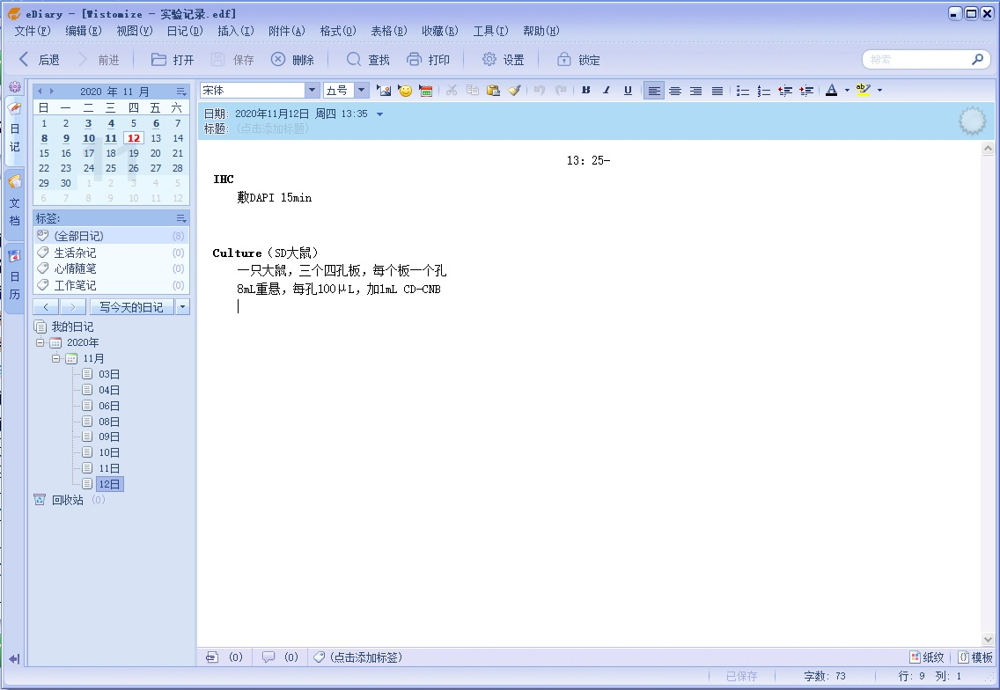

eDiary——实验记录利器
工欲善其事，必先利其器。做好实验记录是养成良好实验习惯的一个必不可少的部分。然而，用纸笔记录实验过程稍显繁琐，且不易复制，还是电子化的记录比较贴近这个时代。
然而，网上很难找到一个比较好的解决方案。直接用简单的文本编辑器要么需要面临每次需要新建文件的问题，而且最后需要整理一个大的文件列表；要么就得在一个文件中写到底，那么这个文件就会很长，需要建立索引，这又是一件比较麻烦的事情，而且这个文件如果丢掉或者出问题也是一个比较麻烦的问题。
一番寻找无果之后，本打算自己动动手写一个。开始构思的时候，发现自己需要的其实本质上就是一个类似于日记本的东西……欸？那我改变一下思路，去网上找一个日记本的软件，找到的概率好像应该会大很多啊。
果不其然，网上随便一搜就找到了这个叫eDiary的软件。
下载链接： eDiary 原作者网站
作者看起来也是一个喜欢自己写一点东西的人，这个eDiary看起来是他最具代表性的作品了。不过这个软件只能在Windows上面用，对于苹果全家桶用户来说似乎不是很友好。不过看起来也不是太大的问题，毕竟实验室工位还是Win。（或许有时间可以写一个Mac的，刚好练一下swift，现在生态也比较好，搞一个全Apple OS的似乎也是很有可能的）
这个软件的主界面如上图。优点大概有如下这些：
1. eDiary的文本编辑功能很强大，word上一般能用得上的功能基本上都有
2. 最最方便的是，界面左上角的日历可以非常方便的查看过去写的东西，而且每当新的一天到来的时候，只需要点击日历上代表当天的数字，就会切换到当天的页面并且创建一个新的文件
3. 每个日记本独立是一个文件，可以随时备份，也可以设置密码来保护
4. 日记可以导出成其他格式，如rtf或者txt
5. 这个软件还提供了可以写文档的地方，也就是说，不只是可以写日记，你还可以写文档（有点鸡肋）
6. 你可以换皮肤（都不如原版好看，更鸡肋）
……
大概还有很多功能可以探索，我并没有用多久，但是觉得这东西很实用